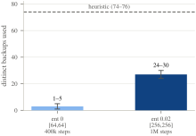

The same setup again, 4× larger (80 primaries, 48 hosts that can act as backups, 16 of them bad), with the same number of runs as the 16-host test rather than a reduced one. This page is the longest because three new things showed up at this size, not because a bigger network automatically means more to report.
| Method | Mean (ms) | Median (ms) | p95 (ms) | p99 (ms) |
|---|---|---|---|---|
| concentrated | 772.41 | 4.05 | 3325.13 | 18971.94 |
| random | 101.54 | 32.20 | 357.33 | 1087.47 |
| round_robin | 48.13 | 30.95 | 69.15 | 1058.35 |
| heuristic | 47.92 | 30.97 | 67.57 | 1058.17 |
| optimal | 49.06 | 31.38 | 71.57 | 1057.86 |
| rl | 457.86 | 26.65 | 232.01 | 7178.12 |
rl here is the fixed policy (rl_model_scaled128_v3.zip) — ~7–10× worse than heuristic/optimal/round_robin on the mean, yet its median (26.65ms) is the lowest of any method: the penalty is entirely in the tail. See the RL story below.
In the run we report, a batch of calls to the single backup shared by 79 other primaries (concentrated, seed 2) used up all 8 retries and were counted as failures at 10s each. The other four seeds of the same setup finished every call. Either way, its average latency stays more than ten times higher than every other method, and its p99 is about 19 seconds of real queueing delay. The fact that calls fail in one seed and not in another, with nothing else changed, is part of the result: at this load, concentrated is not just bad, it is unpredictable. With Python's default limit of 5 waiting connections, DEFT's backup code cannot reliably serve about 79 primaries sharing one backup, even when the client retries. That is a real limit of the implementation, not something our test created.
At 128 hosts round_robin happens to pick no bad hosts at all (the name-sorting accident described on the 32-host page), so it is not punished here for the very thing this test is meant to measure. The three averages sit within about 2% of each other (47.9, 48.1 and 49.1ms for heuristic, round_robin and optimal). Since all three always produce the same mapping for a given network and seed, that small gap is just timing noise, not a real difference in quality. This does not contradict the main claim; it shows it clearly. Round-robin's result is out of anyone's control: it does badly at 16 and 32 hosts and well at 128 purely because of how the names sort. Heuristic and optimal avoid bad hosts by design, at any size, noise or not.
First model (400k steps, default ent_coef=0.0, network [64,64]): it nearly collapsed. Across the 5 seeds it used only 1 to 5 different backups, sending almost all 80 primaries to the same host (w101) and hitting the same connection-queue failure as concentrated. With no entropy bonus, nothing stops the policy from settling on one choice early, once that choice looks good on average. Included as rl_model_scaled128_collapsed.zip.
Second try: ent_coef=0.01, network [128,128], 600k steps. Only a partial improvement, so we did not include this one.
Final version (used in the table above): ent_coef=0.02, network [256,256], bigger batches, 1M steps (rl_model_scaled128_v3.zip). This one fixes one of the policy's two problems completely, and the other only partly.
Picking good hosts: fully fixed. It never chose a bad host in any of the 5 seeds (0 out of 400), the same as heuristic and optimal.
Spreading load: better, but not fixed. It now uses 24 to 30 different backups for the 80 primaries, against the heuristic's 74 to 76. That is a big jump from the collapsed 1 to 5, but in the tighter seeds it still sends as many as 28 of the 80 primaries to one favourite host (the busiest backup holds between 9 and 28, depending on the seed), while heuristic and optimal give each backup only 1 or 2. This crowding only shows up in the slowest calls: rl's median latency (26.65ms) is actually the best of any method in the table above.

In the real test, this costs an average of 458ms and a p99 of 7178ms, roughly 7 to 10 times worse than heuristic, optimal and round-robin on the average and the slowest calls, though rl's median is still the best of any method. It is also far better than the first model, which crashed the test outright.
| Comparison | r | Reading |
|---|---|---|
| concentrated vs rest | 0.66–0.77 | large, and clear in every comparison |
| round_robin vs heuristic/optimal | −0.00 to +0.02 | tiny; the same in practice (see above) |
| rl vs heuristic/optimal/round_robin | −0.17 to −0.18 | small to medium; rl is worse mostly on its slowest calls |